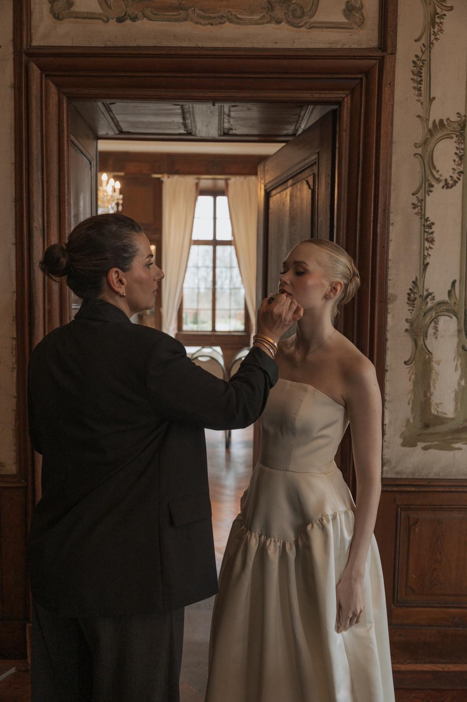

Von der Kunst
zur Expertise
Seit über einem Jahrzehnt ist Beauty meine Leidenschaft – von Make-up und Hairstyling bis hin zu Augenbrauen-Design. Was 2018 mit professionellen Ausbildungen in Make-up, Hairstyling und Maskenbildnerei für Medien, TV, Theater und Spezialeffekte (SFX) begann, mündete 2020 in die Selbstständigkeit.
Von 2023 bis 2025 arbeitete ich in Köln eng mit dem renommierten Make-up Artist Serhat Şen zusammen – Schwerpunkt Bridal Styling auf internationalem Niveau.
Ob Hochzeit, Shooting oder Bühne – ich bin mobil, flexibel und immer mit echter Leidenschaft dabei.
Expertise
Bridal Excellence
Perfektion für den wichtigsten Tag. Inspiriert von internationalem Handwerk und jahrelanger Erfahrung mit Bräuten aus unterschiedlichsten Kulturen.
Editorial & Media
Von TV-Produktionen bis hin zu spezialisierten SFX Character-Designs. Professionelles Make-up für Foto, Film und Bühne.
Lifestyle Design
Individuelles Augenbrauen-Styling und mobile Beauty-Konzepte — maßgeschneidert für deinen Alltag oder besonderen Anlass.